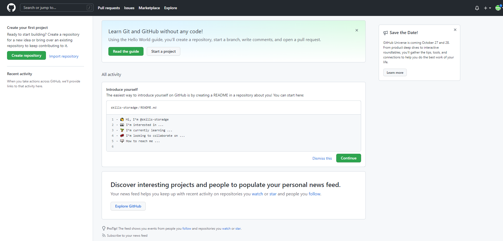

После создания аккаунта на GitHub, мы увидели вот такую страницу:

Сразу стоит сказать, что страница хоть и лаконична в своем исполнении, но очень красивая.
В ней только одна проблема – ничего не понятно
И чтобы хоть как-то понять, что мы здесь можем делать, нам нужно узнать, где находится главное меню GitHub, то есть – кнопки, которые предоставят нам основные функции сайта.
Ну а практическим бонусом упражнения станет то,
что мы научимся выходить (sign-out) из нашего аккаунта и разными способами в него входить (sign-in).